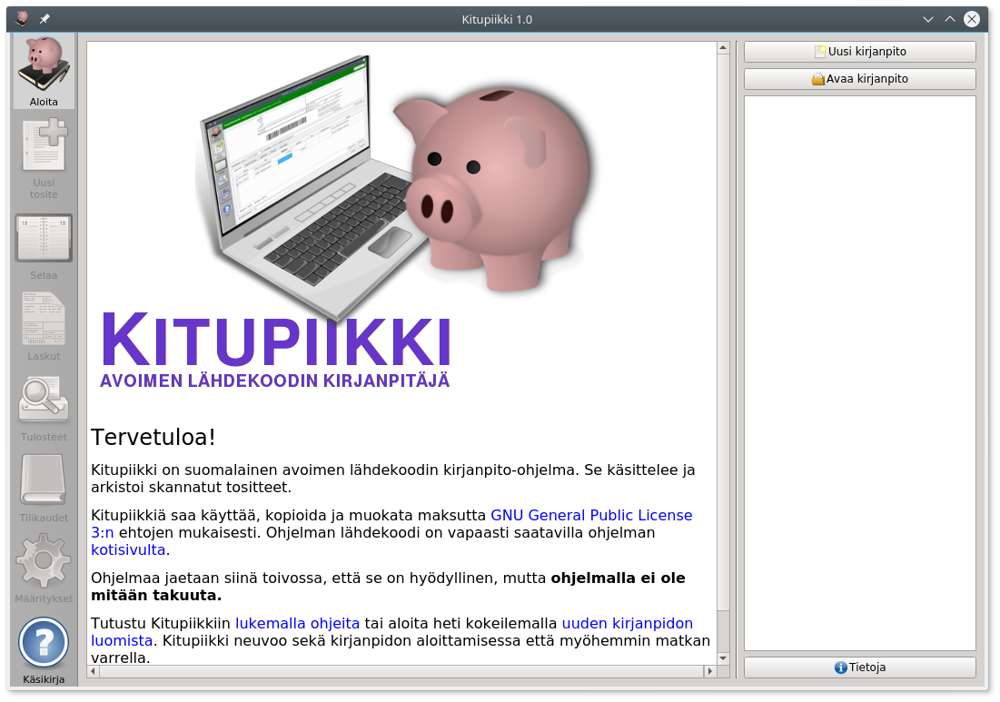
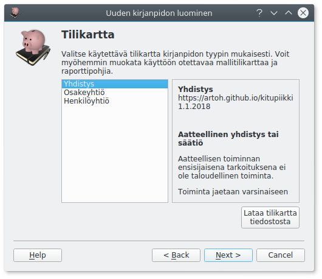
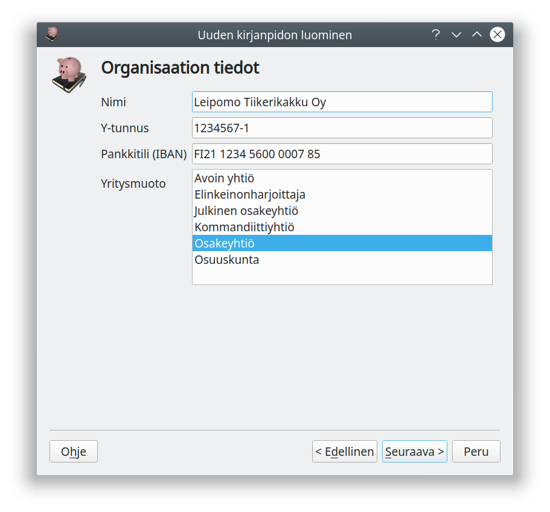
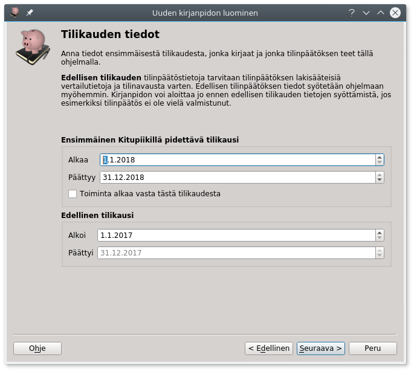
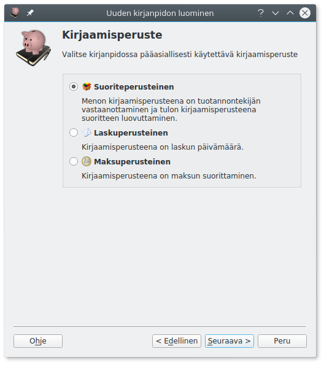
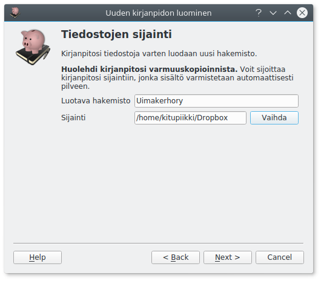
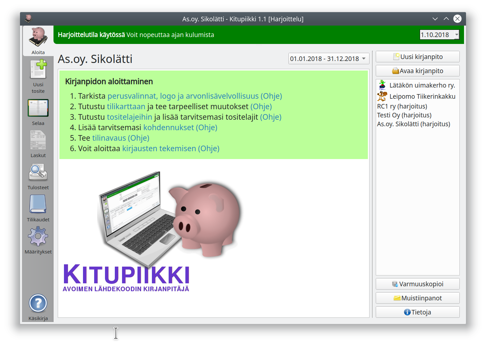
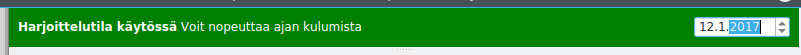

Kirjanpidon aloittaminen¶
Aloittaminen¶

Uusi kirjanpito aloitetaan Aloita-välilehden Uusi kirjanpito-napista.
Harjoitus vai todellinen?¶

Ensimmäisellä näytöllä valitset, oletko aloittamassa harjoittelukirjanpitoa vai todellista kirjanpitoa.
Kokeile ensin
Ennen varsinaisen kirjanpidon aloittamista kannattaa Kitupiikkiä kokeilla harjoittelutilassa. Harjoittelutilassa voit nopeuttaa ajan kulumista, joten voit harjoitella myös tilinpäätöksen tekemistä ja uuden tilikauden aloittamista.
Tilikartta¶

Toisessa ruudussa valitaan tilikartta. Tilikartta määrittää käytettävien tilien lisäksi myös käytössä olevat raportit eli esimerkiksi tuloslaskelman rakenteen sekä tilinpäätöksen pohjan.
| Tilikartan nimi | Kuvaus |
|---|---|
| Elinkeintotoiminta | Tilikartta yritystoimintaa varten. Yritysmuotoina elinkeinonharjoittaja, avoin yhtiö, kommandiittiyhtiö, osuuskunta, osakeyhtiö ja julkinen osakeyhtiö. Tilikartta on yhteensopiva Tilitin-ohjelman elinkeinotoiminnan tilikartan kanssa. 869 tiliä. |
| Yhdistys | Tilikartta aatteelliselle yhdistykselle ja säätiölle. Tuloslaskelma on yhdistyskaavan mukainen. 214 tiliä, kirjanpitoa aloitettaessa valitaan tilikartan laajuus (käytössä olevat tilit) yhdistyksen tarpeiden mukaisesti. |
Kiinteistöyhtiön tilikartta
Kiinteistöyhtiön tilikartan voi ladata erikseen. Kiinteistöyhtiön tilikartta on puutteellisesti testattu, eikä siinä ole käytössä kaikkia ominaisuuksia.
Voit valita ohjelman mukana tulevan tilikartan tai Lataa tilikartta tiedostosta-napilla erilliseen tiedostoon tallennetun tilikartan.
Voit myöhemmin lisätä, muokata ja poistaa käytössä olevia tilejä samoin kuin raporttien ja tilinpäätöksen malleja.
Perustiedot¶

Seuraavassa ruudussa syötetään organisaation nimi ja Y-tunnus. Näitä voi muokata myöhemmin perusmäärityksissä.
Lisäksi voit syöttää pankkitilin (ensisijainen käyttötili) tilinumeron. Tilinumero tulostuu laskuille ja sitä käytetään myös maksujen ja tiliotteiden kohdistamiseen. Tilinumeron voi syöttää myöhemmin tilin tietoihin tilikartassa.
Elinkeinotoiminnan tilikartoissa valitaan yritysmuoto, mikä määritelee käytössä olevia tilejä. Yhdistystilikartassa valitaan vastaavasti tilikartan laajuus. Laajaa elinkeintoiminnan tilikarttaa tarvitset vain, jos yhdistys harjoittaa sellaista elinkeinotoimintaa, josta maksetaan arvonlisäveroa.
Tilikausi¶

Anna tiedot ensimmäisestä Kitupiikillä pidettävästä tilikaudesta. Koska tilinpäätökseen tulostetaan vertailutiedot myös edellisestä tilikaudesta, anna myös edellisen tilikauden päivämäärät.
Edellisen tilikauden tiedot syötetään viimeisimmän tilinpäätöksen tilikohtaisesta tase-erittelystä sekä tuloslaskelman erittelystä. Voit aloittaa kirjanpidon ja myös tehdä uusia kirjauksia, vaikka tilinavausta ei olisikaan tehty.
Valitse Toiminta alkaa vasta tästä tilikaudesta vain, jos yritys perustetaan vasta tällä tilikaudella eikä tilinavausta tehdä lainkaan.
Kirjaamisperuste¶

Osalla tilikarttoja voit valita pääasiallisen kirjaamisperusteen. Valinta vaikuttaa kirjaamisen oletusvastatileihin ja laskutuksen valintoihin.
Suoriteperuste on ensisijainen
Mikroyhdistyksiä ja -säätiöitä lukuun ottamatta kirjanpito on oikaistava tilinpäätöstä varten aina suoritusperusteiseksi.
Tiedostojen sijainti¶

Valitse tiedostonnimi ja sijainti, minne kirjanpito tallennetaan. Tähän tiedostoon tallennetaan koko kirjanpito kaikkine liitteineen niin, että kirjanpidon voi siirtää tai varmuuskopioida kopioimalla tämän yhden tiedoston.
Kirjanpitotiedoston lisäksi samaan hakemistoon luodaan myöhemmin .arkisto-päätteinen hakemisto, jonne kirjanpidon sähköinen arkisto tallennetaan.
Huolehdi varmuuskopioinnista
Huolehdi kirjanpitosi varmuuskopioinnista! Kirjanpidosta tulisi olla aina varmuuskopio toisella tietovälineellä!
Kirjanpito pilvessä
Voit tallettaa kirjanpidon sellaiseen hakemistoon, joka synkronoidaan automaattisesti pilvipalveluun, kuten Dropbox. Näin tiedostot ovat aina turvassa tietokoneesi rikkoutumiselta. Varminta on kuitenkin, jos tiedot varmuuskopioidaan säännöllisesti myös muulle tietovälineelle.
Valmista tuli!¶

Kaikki valinnat on tehty, ja sinulle näytetään valitsemaasi tililuetteloon liittyvä ohje. Kun olet vielä vahvistanut valintasi, luodaan uusi kirjanpito.
Viimeistele vielä määritykset¶

Ennen kuin aloitat kirjausten tekemisen, kannattaa vielä tarkistaa joukko määrityksiä. Ne kaikki on selostettu seuraavassa luvussa.

Jos käytät harjoittelutilaa, on ikkunan ylälaidassa vihreä Harjoittelutila käytössä-palkki, ja vaihtamalla oikeassa yläkulmassa olevaa päivämäärää voit "matkustaa ajassa" eli määrätä, mikä päivä on menossa, ja siten kokeilla vaikkapa tilinpäätöksen tekemistä, alv-tilitystä tai uuden tilikauden aloittamista.